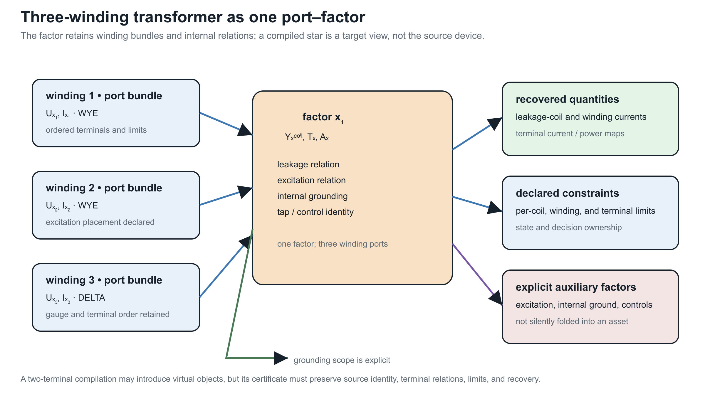

Multiwinding terminal leakage assembly
Page status: guarded exact terminal assembly with executable certificates; tap-dependent and excitation extensions remain open.
The pairwise-leakage compilation produces a relation among winding coil coordinates. A network model, however, connects transformer terminals to buses. This chapter composes the leakage relation with the winding connection factors while keeping coil currents available for operational constraints.
The result is an exact terminal-level leakage factor, not yet a complete transformer model. Magnetizing and core-loss branches, vector-group phase shifts not represented by the connection incidence, and adjustable taps remain separate factors.

Typed winding factors
For transformer $x$, winding $k$ at bus $i$ has ordered terminal voltage $\mathbf U_{xki}$ and labelled coil coordinates $\mathcal C_{xk}$. Its connection incidence satisfies
\[\mathbf V_{xk}^{\mathrm{coil}} =\mathbf A_{xk}\mathbf U_{xki}.\]
The row labels of $\mathbf A_{xk}$ are part of the type. Two rows occupying the same array position do not thereby represent the same magnetic coordinate. The executable rule requires every winding to declare the same set $\mathcal C_x$ and constructs the coil-row permutation $\mathbf Q_{xk}$ from its source order to a common order. It then uses
\[\widetilde{\mathbf A}_{xk} =\mathbf Q_{xk}\mathbf A_{xk}, \qquad \widetilde{\boldsymbol{\imath}}_{xk}^{\max} =\mathbf Q_{xk}\boldsymbol{\imath}_{xk}^{\max}.\]
This is an output-coordinate action on the terminal-to-coil operator. It is distinct from permuting the input terminal coordinates, which right-multiplies $\mathbf A_{xk}$ by an inverse permutation. We use $\mathbf Q_{xk}$ for the coil-row action throughout this chapter so it cannot be confused with the terminal-coordinate permutation $\mathbf P_{xk}$ in the preceding chapter.
Block assembly
Order windings by $k$ and form
\[\mathbf A_x =\operatorname{blkdiag} \left( \widetilde{\mathbf A}_{x1},\ldots, \widetilde{\mathbf A}_{xn_x} \right).\]
Let $\mathbf Y_x^{\mathrm w}$ be the reference-invariant winding admittance from TR-XFMR-002, and let $n_c=|\mathcal C_x|$. With winding-major, coil-minor stacking, the repeated magnetic-coordinate relation is
\[\mathbf Y_x^{\mathrm{coil}} =\mathbf Y_x^{\mathrm w}\otimes\mathbf I_{n_c}.\]
This Kronecker form is a declared model assumption: the same winding leakage matrix acts independently on every common coil coordinate. A transformer with inter-coordinate magnetic coupling requires a full block or tensor relation in place of $\mathbf Y_x^{\mathrm w}\otimes\mathbf I_{n_c}$.
The component equations are
\[\mathbf V_x^{\mathrm{coil}}=\mathbf A_x\mathbf U_x, \qquad \mathbf I_x^{\mathrm{coil}} =\mathbf Y_x^{\mathrm{coil}}\mathbf V_x^{\mathrm{coil}}, \qquad \mathbf I_x=\mathbf A_x^{\mathsf T}\mathbf I_x^{\mathrm{coil}}.\]
Consequently,
\[\boxed{ \mathbf Y_x^{\mathrm{terminal}} =\mathbf A_x^{\mathsf T} (\mathbf Y_x^{\mathrm w}\otimes\mathbf I_{n_c}) \mathbf A_x }.\]
Because the incidence is real, the assembly also preserves complex power:
\[\mathbf U_x^{\mathsf H}\mathbf I_x =(\mathbf A_x\mathbf U_x)^{\mathsf H} \mathbf I_x^{\mathrm{coil}}.\]
The numerical certificate evaluates this identity for a deterministic complex voltage witness; its residual is $1.62\times10^{-13}\ \mathrm{VA}$.
Why the current map must remain
A bare $\mathbf Y_x^{\mathrm{terminal}}$ preserves the unconstrained terminal relation. It does not by itself expose the current in winding $k$ and coil $c$. The exact decision-aware target therefore retains
\[\mathbf I_x^{\mathrm{coil}} =\mathbf Y_x^{\mathrm{coil}}\mathbf A_x\mathbf U_x\]
and enforces every source constraint
\[\left| \left[ \mathbf Q_{xk}^{\mathsf T} \mathbf I_{xk}^{\mathrm{coil}} \right]_c \right| \leq \overline i_{xkc}.\]
Thus eliminating coil-current variables is optional, but eliminating their recovery map is not exact for a decision problem containing winding limits. This is the same preservation distinction exposed earlier by heterogeneous parallel lines.
Coordinate and reference covariance
Three independent changes are tested:
- changing the internal leakage reference leaves $\mathbf Y_x^{\mathrm w}$ and hence the terminal factor unchanged;
- reordering a winding's coil rows and labels is removed by $\mathbf Q_{xk}$; and
- if terminal coordinates change by $\widehat{\mathbf U}_x=\mathbf P_x \mathbf U_x$, then
\[\widehat{\mathbf Y}_x^{\mathrm{terminal}} =\mathbf P_x\mathbf Y_x^{\mathrm{terminal}}\mathbf P_x^{\mathsf T}.\]
The rule also accepts winding factors in arbitrary serialization order; stable winding positions determine the assembly order.
Running transformer
Fixture transformer $x_1$ has two grounded-wye four-terminal windings and one delta three-terminal winding. Each has three labelled coil coordinates. The compiled matrices therefore have dimensions
| Object | Dimension |
|---|---|
| terminal-to-coil incidence $\mathbf A_{x_1}$ | $9\times11$ |
| coil admittance $\mathbf Y_{x_1}^{\mathrm{coil}}$ | $9\times9$ |
| terminal admittance $\mathbf Y_{x_1}^{\mathrm{terminal}}$ | $11\times11$ |
| lifted coil-current map | $9\times11$ |
For the recorded witness, terminal-current recovery has residual $9.10\times10^{-14}\ \mathrm A$. Recompiling the leakage relation with winding 2 rather than winding 1 as its internal reference changes the terminal matrix by at most $8.53\times10^{-14}\ \mathrm S$.
The focused test suite also reads the canonical running-network $x1$ contract directly and rebuilds this WYE/WYE/DELTA assembly from its declared winding maps, short-circuit data, and current limits. This is a fixture smoke test, not nameplate validation: the contract itself labels the illustrative extensions and does not turn the executable model into measured equipment data.
The companion conductor-terminal lift is now direct for the serialized multiwinding contract. It creates one ordered port for each winding, preserves the neutral terminal on the two WYE windings, leaves the DELTA winding as a three-terminal port, and records the internal grounding and excitation shunt as separate observations. This is a structural incidence result; it does not replace the terminal leakage assembly or claim that the reduced port graph alone preserves winding-current constraints.
The companion typed-Kron probe makes the reduction precondition visible. If the DELTA terminal block is selected for elimination from this serialized terminal admittance, its three-by-three internal block is singular because no terminal grounding for that port is declared. The reduction therefore refuses the Schur complement without a pseudoinverse. The DELTA winding's current-limit observation remains in the source contract and is not silently removed.
The package-independent implementation rejects mismatched coil-label sets, inconsistent winding positions, differing transformer identities, nonfinite matrices, and disagreement between winding and leakage current limits. Its machine-readable result is certificate TR-XFMR-003.
Model boundary
The compilation assumes one common labelled set of magnetic coil coordinates and fixed connection incidence, with leakage repeated independently across those coordinates. It does not infer phase correspondence from array position, duplicate pairwise tests into independent transformers, or replace coil-current limits by terminal-current magnitudes. A complete transformer factor must later compose this leakage block with any declared phase shift, tap, magnetizing, core-loss, grounding, thermal, and decision relations. The fixed-linear transformer factor completion performs that composition for fixed linear components; adjustable controls remain parameterized decision factors.